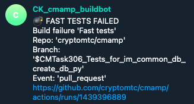

Buildmeister process
General
- Buildmeister rotates every 2 weeks
- To see who is the Buildmeister now refer to Buildmeister gsheet
- Each rotation should be confirmed by a 'handshake' between the outgoing Buildmeister and the new one in the related Telegram chat
- Buildmeister is responsible for:
- Pushing team members to fix broken tests
- Conducting post-mortem analysis
- Why did the break happen?
- What can we avoid the problem, especially through process and automation
- Testing workflows are available via github actions:
- Testing workflows that need to be checked:
- cmamp:
- Fast tests
- Slow tests
- dev_tools:
- Fast tests
- Slow tests
- Refer to .github dir in the repo for update schedule of GH actions
- Additional information about the tests and gdoc
Notification system
@CK_cmamp_buildbotnotifies the team about breaks via Telegram channelCK build notifications- A notification contains:
- Failing tests type: fast/slow/super-slow
- Repo
- Branch
- Event
- Link to a failing run
Example: - 
Buildmeister instructions
- You receive a break notification from
@CK_cmamp_buildbot - Have a look at the message
- Do it right away, this is always your highest priority task
-
Notify the team
-
Post on the
CK build notificationsTelegram channel what tests broke, e.g.,
FAILED knowledge_graph/vendors/test/test_utils.py::TestClean::test_clean - If unsure about the cause of failure (chance that failure is temporary):
- Do a quick run locally for failed test
- If test is specific and can not be run locally, rerun the regressions
- Ask if somebody knows what is the problem
- If you know who is in charge of that test (you can use
git blame) ask directly
- If you know who is in charge of that test (you can use
- If the offender says that it's fixing the bug right away, let him / her do it
-
Otherwise file a bug to track the issue
-
File an Issue in GH / ZH to report the failing tests and the errors
- Example:
https://app.zenhub.com/workspaces/cm-615371012ed326001e044788/issues/alphamatic/dev_tools/318 - Issue title template
Build fail - {repo} {test type} ({run number})- Example:
Build fail - Cmamp fast_tests (1442077107)
- Example:
- Paste the URL of the failing run
- Provide as much information as possible to give an understanding of the problem
- List all the tests with FAILED status in a github run, e.g.,
FAILED knowledge_graph/vendors/test/test_p1_utils.py::TestClean::test_clean
FAILED knowledge_graph/vendors/nbsc/test/test_nbsc_utils.py::TestExposeNBSCMetadata::test_expose_nbsc_metadata
- Stack trace or part of it (if it's too large)
Traceback (most recent call last): File
"/.../automl/hypotheses/test/test*rh_generator.py", line 104, in test1
kg_metadata, * = p1ut.load_release(version="0.5.2") File
"/.../knowledge_graph/vendors/utils.py", line 53, in load_release % version,
File "/.../amp/helpers/dbg.py", line 335, in dassert_dir_exists \_dfatal(txt,
msg, \*args) File "/.../amp/helpers/dbg.py", line 97, in \_dfatal
dfatal(dfatal_txt) File "/.../amp/helpers/dbg.py", line 48, in dfatal raise
assertion_type(ret) AssertionError:
##############################################################################
* Failed assertion * dir='/fsx/research/data/kg/releases/timeseries_db/v0.5.2'
doesn't exist or it's not a dir The requested version 0.5.2 has no directory
associated with it.
- Add the issue to the BUILD - Breaks Epic so that we can track it
- If the failures are not connected to each other, file separate issues for each of the potential root cause
-
Keep issues grouped according to the codebase organization
-
Post the issue reference on Telegram channel CK build notifications
- You can quickly discuss there who will take care of the broken tests, assign that person
- You can use
git blameto see who wrote the test -
Otherwise, assign it to the person who can reroute
-
Our policy is "fix it or revert"
-
The build needs to go back to green within 1 hr
- Either the person responsible for the break fixes the bug within 1 hour
- Or you need to push the responsible person to disable the test
- Do not make the decision about disabling the test yourself!
- First, check with the responsible person, and if he / she is ok with disabling, do it
- NB! Disabling the test is not the first choice, it's a measure of last resort!
-
Regularly check issues that belong to the Epic BUILD - Breaks.
- You have to update the break issues if the problem was solved or partially solved.
-
Pay special attention to the failures which resulted in disabling tests
-
When your time of the Buildmeister duties is over, confirm the rotation with the next responsible person in the related Telegram chat.
update_amp_submodule fails
-
When this happens, the first thing to do is attempt to update the
amppointer manually -
Instructions:
> cd src/dev_tools1
> git checkout master
> git pull --recurse-submodules
> cd amp
> git checkout master
> git pull origin master
> cd ..
> git add "amp"
> git commit -m "Update amp pointer"
There is also an invoke target git_roll_amp_forward that does an equivalent
operation
Post-mortem analysis (TBD)
- We want to understand on why builds are broken so that we can improve the system to make it more robust
- In order to do that, we need to understand the failure modes of the system
-
For this reason we keep a log of all the issues and what was the root cause
-
After each break fill the Buildmeister spreadsheet sheet "Post-mortem breaks analysis"
-
Datecolumn: - Enter the date when the break took place
-
Keep the bug ordered in reverse chronological order (i.e., most recent dates first)
-
Repocolumn: -
Specify the repo where break occurred
amp- ...
-
Test typecolumn: -
Specify the type of the failing tests
- Fast
- Slow
- Super-slow
-
Linkcolumn: -
Provide a link to a failing run
-
Reasoncolumn: -
Specify the reason of the break
- Merged a branch with broken tests
- Master was not merged in a branch
- Merged broken slow tests without knowing that
- Underlying data changed
-
Issuecolumn: -
Provide the link to the ZH issue with the break description
-
Solutioncolumn: - Provide the solution description of the problem
- Problem that led to the break was solved
- Failing tests were disabled, i.e. problem was not solved